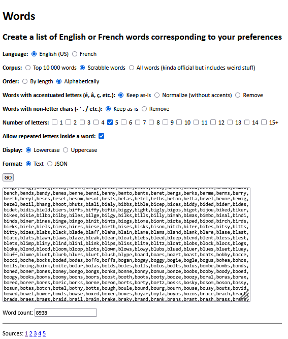

JS13k 2026:
August-September 2026
Before the jam
A future word game? (October 2024)
At the end of JS13k 2025, I remembered that Senokay, the author of RoadRoller, had made a 1kb typing game ("epyt") containing 1,903 english words, thanks to the magic of WOFF2's Brotli dictionnary (you can play the game and read the explanations HERE), and it made me wonder if I could use that to make a word game for JS13K. Imagine a 13kb game containing an english dictionnary!
By chance, Senokay released a standalone script that compresses any JS file into a self-extracting WOFF2 file in HTML form. And it's compatible with Firefox! (epyt is not playable on modern versions of Firefox). His script is available HERE and I made a more complete package with all the necessary data and instructions HERE.
My next step was to think about which words exactly I would like to put in a 13kb game. Indeed, I quickly realized that the whole english or french dictionnary (300k+ words each) could never fit in an entry, even with the WOFF2 compressor. So I took some time to search relevant lists of words (the 10k most used words in french / english, the official Scrabble words, etc..) and started making little compression tests on my PC. The results were promising, so I rolled up my sleeves and made a complete tool that generates lists of words in french and english with tons of cool options (3 different corpus, number of letters, order by size or alphabetically, normalize special chars, remove words with repeated letters, etc): I called it WORDS.

With this tool in hand, I could make much more tests and here's what I found:
1) Compressing a long list of words (for a project bigger than 1kb) is much more efficient with Roadroller than with WOFF2.
2) The compression is much more efficient if we order the words alphabetially than if we order them by length first.
3) For some reason, the compression is much better if the list is in JSON instead of TXT (i.e. with double quotes around the words).
The conclusions of my tests are the following:
- We can compress ALL the french and ALL the english 5-letter Scrabble words together (17,541 words, 140kb) in 15.3kb (impresive but too big for js13k). See the result here.
- We can compress the french AND english 5-letter Scrabble words where all the letters are different (11,074 words, 88kb) in 10.5kb (ok for js13k!). See the result here.
- We can compress ALL the english 1- to 5-letter Scrabble words (14,915 words, 112kb) in 12.8kb (ok for js13k!). See the result here.
- We can compress all the french 1- to 5-letter Scrabble words (11444 words, 87.3kb) in 9.8kb (ok for js13k!). See the result here.
- As soon as we try to include 6 (or more) letter words, the size explodes, so they are sadly disqualified for a js13k word game. For example, the 16,706 6-letter english Scrabble words alone weigh 150kb and compress in 21kb.
- The 10k most used english words (95kb) compress in 19.7kb. (or 25kb/4.9kb for the 1-5 letter words only)
- The 10k most used french words (without the compound words, 85kb) compress in 16kb. (or 12kb/3kb for the 1-5 letter words only)
- RoadRoller is kinda unpredictable: for example, compressing the french 1-5 letter words THEN the english 1-5 letter words without reloading the page in between, makes the english words compress better (about 300 bytes less, which is not negligeable when zipped!)
Note that in each test involving 1 to 5 letter words, amazingly, EACH WORD gets compressed in UNDER ONE BYTE in average. RoadRoller and Zip are truly magical!
Also: I tried to be a smartass and save some bytes by not repeating the prefixes of consecutive words. I even created a tool for that. Unfortunately, every time I tried it, the output after compression was BIGGER than if I hadn't used it. (too bad, the padStart-based decompressor was really elegant!)
I tried other pre-optimizations (ex: only store the "distance" between the words instead of the words themselves), but it also made my zip bigger. In other words, nothing seems to be more efficient than RoadRoller and Zip as far as I can tell!
In conclusion, I think I will (someday) make a word game featuring all the english Scrabble words containing 1 to 5 letters. And maybe add a french version, in a sparate entry. Even if the dictionnary use 95%+ of the entry, the remaining space should be enough to implement my little word games. After all, I already code-golfed a Mini Wordle in 214 bytes and a french spelling bee clone in ~2kb ungolfed and unzipped.
To be continued...
A physics engine? (November 2024)
To be continued...
During the jam
Conclusion
Xem
P.S: as mentioned earlier, I released and announced js13k-pack version 2.0 with a lot of improvements a few days after the end of the votes:
Performance improvements:
— xem 🔵 (@MaximeEuziere) October 13, 2025
- CSS is compressed (optimized), not just minified.
- Roadrolled code now includes HTML, JS and CSS code (except the HTML prefix that can be used for doctype, title, meta tags...)
My 2023 entry lost 400 bytes between 1.0 and 2.0.
My 2024 entry lost 200b